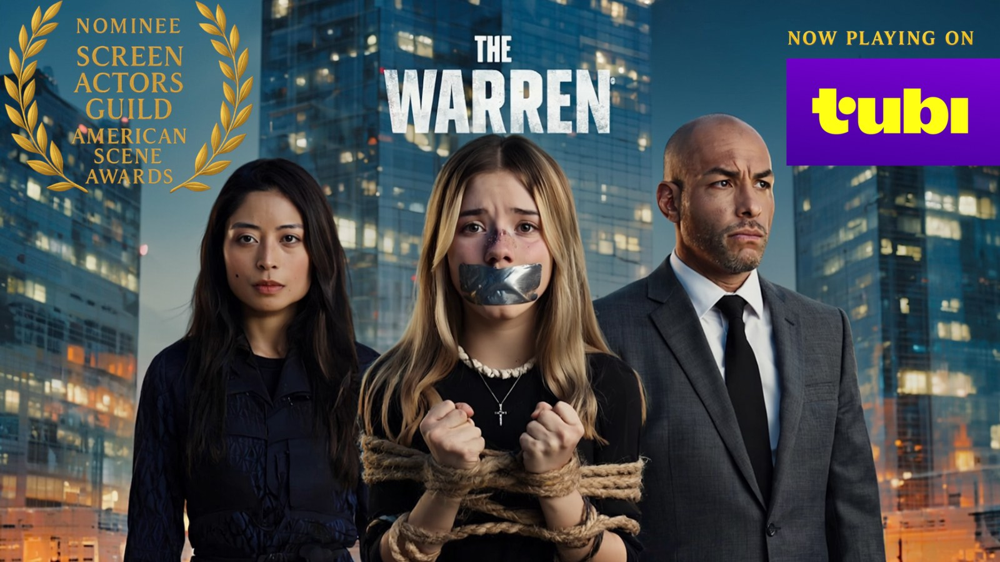

ICE MAIDEN

A proof-of-concept trailer for a psychological thriller about a brilliant detective drawn into a dangerous connection with a ritualistic killer.
Writer/director crafting audience-accessible stories with cinematic tension, emotional depth, humor, and layered human themes.
“If you want entertainment, you’ll be entertained. If you want meaning, there will always be more to find.”
Directed THE WARREN — now streaming on Tubi.
A proof-of-concept trailer for a psychological thriller about a brilliant detective drawn into a dangerous connection with a ritualistic killer.

A character-driven romantic comedy about a fearless relationship podcaster whose public experiment unravels when she meets someone who refuses to play by her rules.

A WWII action ensemble about imprisoned mobsters recruited for a covert mission against Hitler’s war machine — only to discover a mission worth becoming heroes for.

An animated family fantasy adventure rooted in folklore, wonder, humor, emotional courage, and the power of bringing light back to a darkened kingdom.

A visceral animated action concept with mythic stakes, brutal momentum, and a hard-edged visual identity built for high-impact serialized storytelling.
My current slate moves across genre, but the creative engine stays the same: accessible entertainment with deeper emotional layers underneath.

Award-nominated feature thriller now streaming on Tubi. A performance-driven story built on tension, moral pressure, and consequence.
Selected moments across narrative and commercial work — focused on performance, tone, visual intent, and cinematic execution.
Fan-made spec commercials showcasing platform-native, short-form ad storytelling in a social-first format.
Stylized, performance-forward storytelling with a strong visual identity and rhythm.
I believe stories should welcome everyone.
Some audiences come for fun. Some come for emotion. Some come for tension, romance, spectacle, laughter, fear, or escape. My goal is never to separate those audiences — it is to invite all of them into the same experience.
I create stories that are accessible on the surface and deeper for those willing to look beneath it. The audience should never have to work in order to be entertained. But for those who want more, there should always be more waiting: emotional truth, shared experience, reflection, vulnerability, and discovery.
That is the kind of cinema I believe in:
If someone simply wants to be entertained, I want them entertained. If someone comes looking for meaning, I want them to find an endless supply of lessons and shared experiences to eat from.
If you want entertainment, you’ll be entertained. If you want meaning, there will always be more to find.
I direct from a simple belief: people are more capable than we give them credit for.
I call it The Log Principle™.
If there’s a log in the path, you cross it. You don’t wait to be carried, and you don’t expect someone to hold your hand. And when I’m working with actors and crew, I don’t rush in to solve something they’re fully capable of handling themselves.
Because the moment you over-direct, over-explain, or over-control — you rob people of the opportunity to bring something real to the work. I assume competence.
That doesn’t mean I’m absent. It means I’m intentional. I’m always watching, always engaged — but I step in only when it matters: when there’s a real risk, a true gap, or an opportunity to elevate the moment in a meaningful way.
What that creates is a set where:
I’m not interested in perfect control. I’m interested in authentic moments that can only happen when people are given space to meet the material on their own terms.
The best work doesn’t come from being told exactly what to do. It comes from being trusted to do it.
That’s the environment I create.
Cross your own log — and bring something only you could have found.